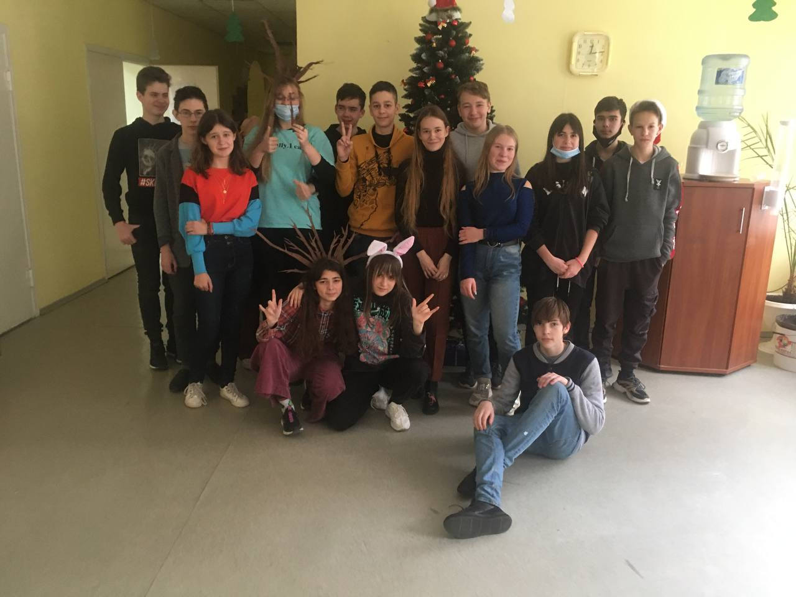

Перший рік, як я прийшла в ліцей
Це було чудово. Пам'ятаю, як я поступала. Як проходили ці чудові пари з математик, і початки аналізу були, і алгебра, і геомотреія, і лекції з практиками були...
Як ходили до гуртожитку в хїїдальню. Як ми їздили в лісний. Як просто збирались десь класом. Так чудово було, навіть сумую за цим всим.
